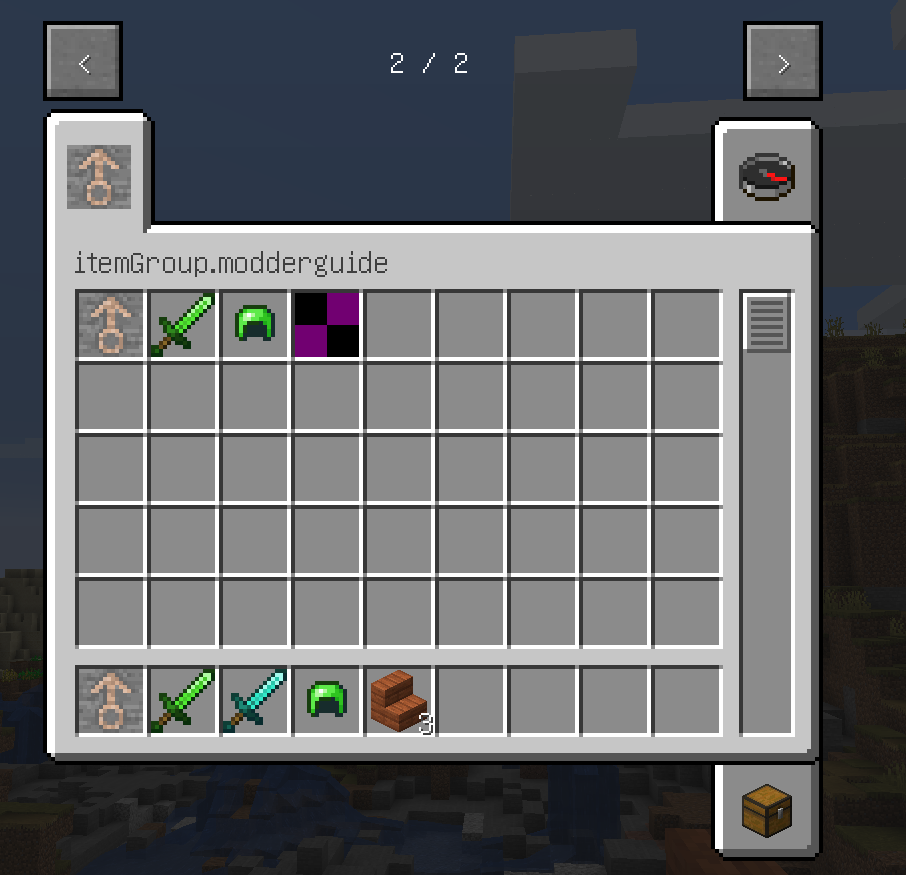

创造模式物品栏
我们先前创建了一些物品，使用了Minecraft的ItemGroup。那本节，我们就来创建自己的ItemGroup。
首先，阅读net.minecraft.item.ItemGroup，接下来按照Minecraft的方式，尝试自己创建ItemGroup，实在搞不懂再看下面的教程。
首先，创建自己的ItemGroup类，本文为MGItemGroup，然后新建一个常量，代码如下：
src/main/java/com/github/vvvbbbcz/modderguide/item/MGItemGroup.java（部分）：
public static final ItemGroup XXXXX = new ItemGroup(label) {
@Override
public ItemStack createIcon() {
return xxxxx;
}
};
首先就是label，它相当于这个ItemGroup的ID，在3.5章节会用到。
其次是createIcon()方法，就是这个物品栏的图标，要求返回一个ItemStack，关于ItemStack，我们会在3.2.5章节讲到。读者现在只需要知道new ItemStack(item)即可。
然后，将相应物品的ItemGroup换成我们自己的，我们自己的物品栏就完工了，启动游戏试试吧！

（那个紫黑块是鱼肉汤，我懒得画材质）